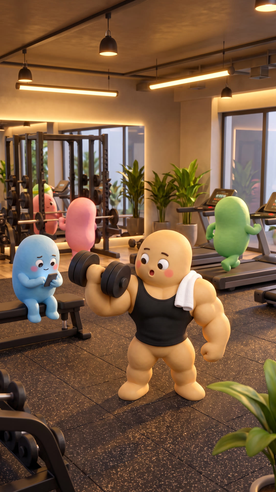

POV: lần đầu bước vào phòng gym

Mười phút rồi. Vẫn chưa dám vào.
Giả vờ nghe điện thoại. Không ai gọi cả.
Thôi xong. Cả phòng đang nhìn mình.

Ảnh cười kìa. Chắc thấy mình cầm tạ ngược.

Thực tế: không ai để ý.
"Mười một, mười hai."
Người ta hay nghĩ mình bị nhìn nhiều gấp khoảng đôi so với thật(Gilovich, Đại học Cornell, 2000)